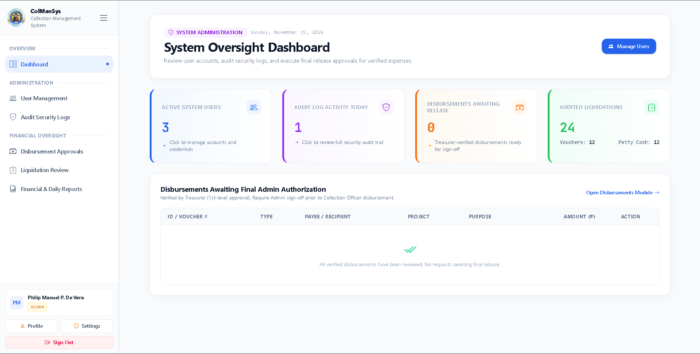
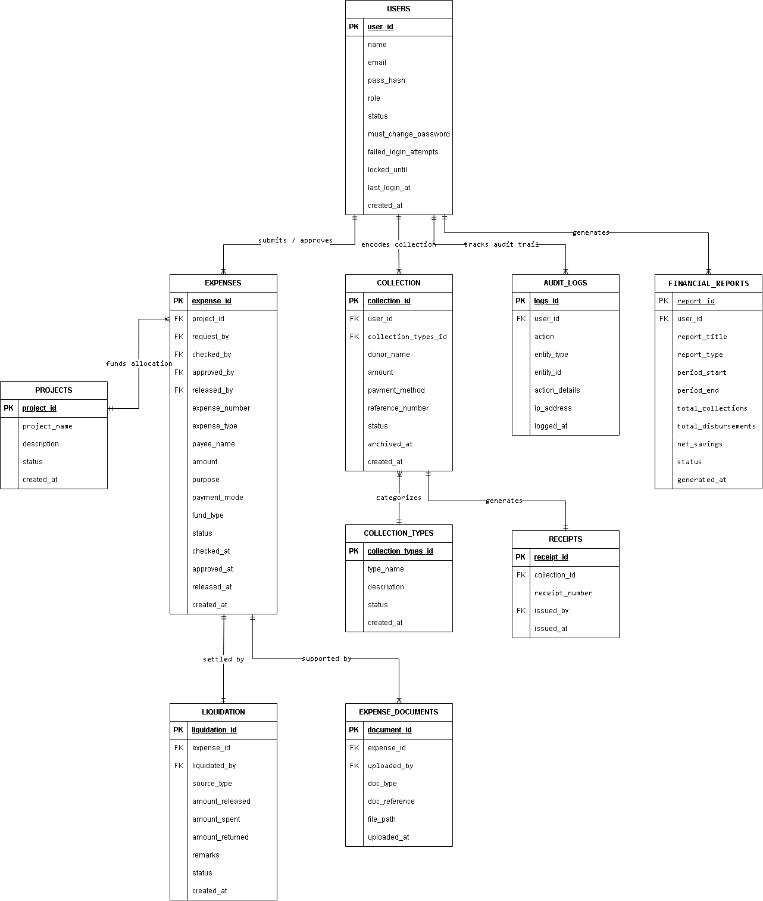

Collection management system for Our Mother of Perpetual Help Parish
A web-based system that records the parish's collections, donations, and expenses, tracks budgets and funds, and produces financial reports. It replaces an older system from 2016 that had no approval workflow, ledger, audit trail, or restore function.
| Role | Main work |
|---|---|
| Admin | Oversight, audit logs, final approval |
| Treasurer | First-level review, balances, reports |
| Collection Officer | Collections, receipts, vouchers |
The parish's old system had no voucher approval, double-entry ledger, fund and budget tracking, audit trail, or restore. Staff re-encoded records in spreadsheets, which caused repeated entries, errors, and late reports.
A normalized relational schema in PostgreSQL with keys and constraints, time-stamped transactions, audit tables, and balanced double-entry posting. Approved transactions cannot be deleted. Corrections go through logged void or refund entries.
Lead developer. I built and fixed the system, and I was in charge of the database and the diagrams (ERDs and data flow diagrams).
Evaluated with the ISO/IEC 25010 quality model. Six IT experts gave a grand mean of 3.59 (Very Functional). Four end-users gave 3.53 (Very Acceptable).



